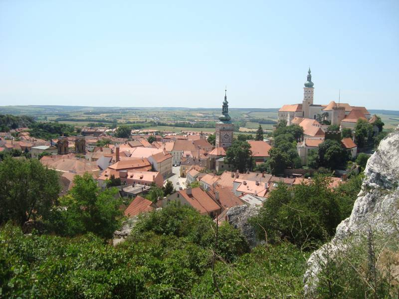
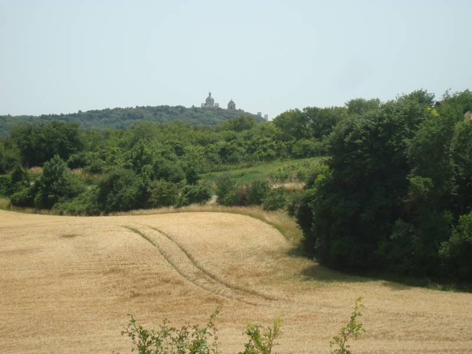
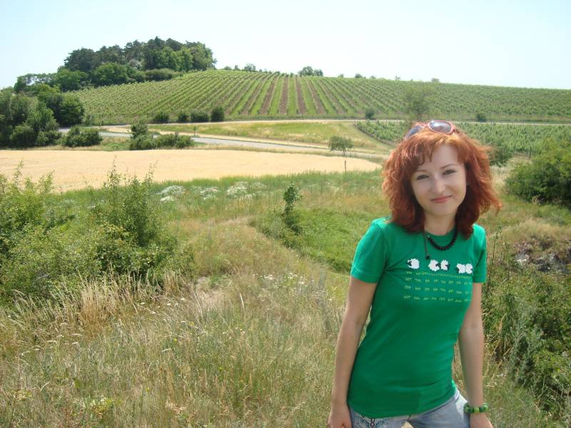
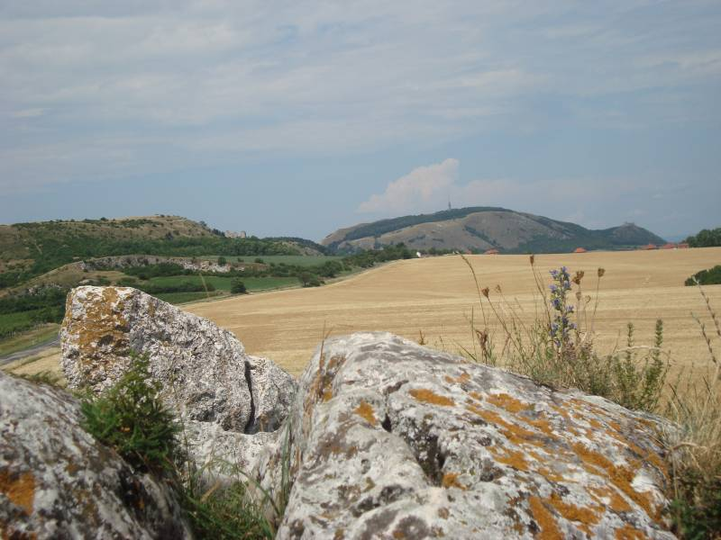
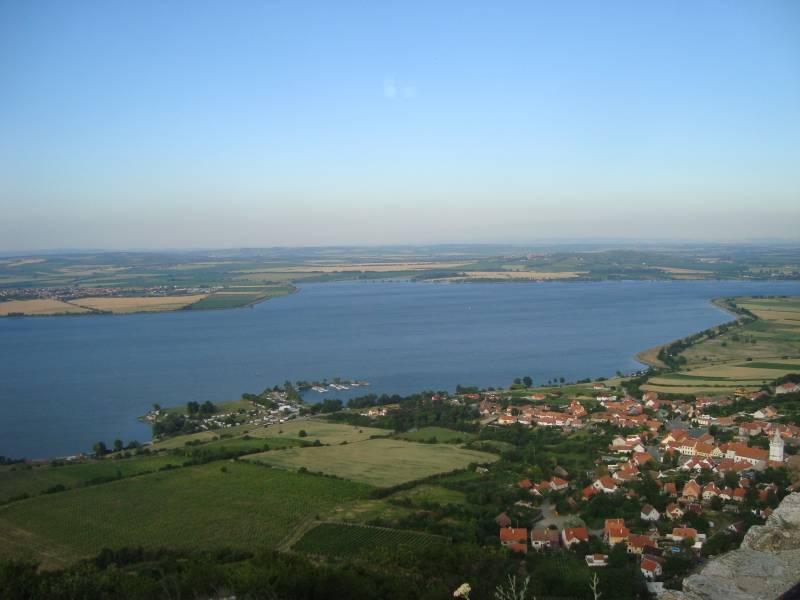
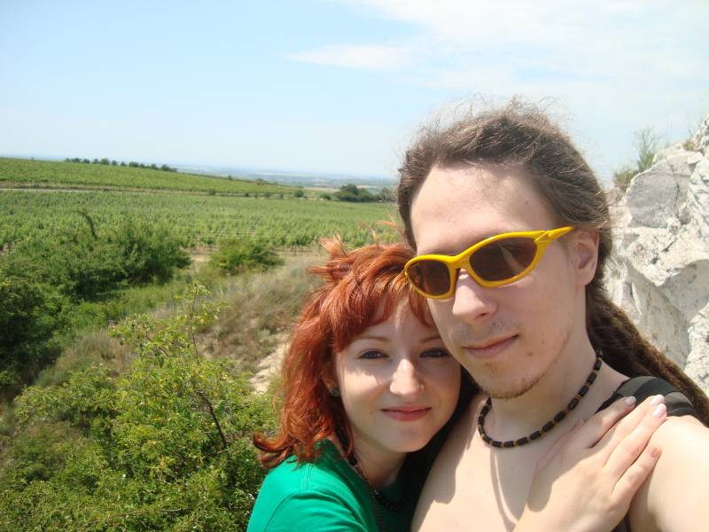

Letošní prázdninové toulání bylo úspěšně zahájeno :-)! A to pěkně zostra, výšlapem přes Pálavské kopce. Pro mě to byla trochu retro výprava, neb jsem mohla cestou zavzpomínat na naši dámskou jízdu 2009…chyběl mi jen ten burčák na rozehřátí, leč na ten si bohužel budeme muset ještě nějaký ten pátek počkat ;-)…
Výpravu jsme naplánovali na středu, protože předpověď počasí pro tento den vypadala velmi příznivě. Abychom si mohli trochu přispat, rozhodli jsme se vyrazit do Mikulova až po desáté, ikdyž jsme tím pádem museli jet courákem vymetajícím všechny jihomoravské dědiny a cesta nám tak zabrala asi hodinu a půl :D. Naštěstí jsme se měli čím zabavit - první část cesty nás plně zaměstnávala obložená bageta, v té druhé jsme si listovali v květnovém čísle Respektu, které jsem si za celé zkouškové neměla čas přečíst. Před polednem jsme už konečně stáli v Mikulově a mohli jsme se rovnou vydat na túru.

Výhled na Mikulov z Kozího hrádku
První krátkou zástávku jsme udělali na Kozím hrádku, abychom nafotili pár snímků a pokochali se krásným výhledem, a brzy jsme pokračovali v cestě okolo židovského hřbitova směrem na Turold. U jeskyní na Turoldu nás čekala první keška. Museli jsme si kvůli ní kousek zajít a nakonec jsme ji stejně nenašli, protože byla ukrytá někde ve stráni a terén vypadal poněkud nebezpečně, ale aspoň jsme si prohlédli geopark. Pak jsme se vrátili zpátky k rozcestí a už jsme se pěkně drželi červené značky.

Výhled na Svatý Kopeček z Kočičí skály
Už při prvním stoupání jsem zalitovala, že jsem si s sebou nevzala plavky, protože sluníčko opravdu vydatně peklo. Nicméně výhodou výletu veprostřed pracovního týdne bylo to, že jsme za celou dobu téměř nepotkali živáčka. Tím pádem nás sice neměl kdo vyfotit, ale na druhou stranu jsem mohla po cestě společně se studem odložit i triko :D…

Vinice kam se podíváš
Další keška nás měla čekat na Kočičí skále. Vyšplhali jsme se až nahoru a dokonce i našli přesné místo (respektive díru), kde měla být ukrytá, jenomže keška nikde :O…Zjistili jsme, že ani lovec před námi ji nenašel, takže jsme usoudili, že je zbytečné po ní pátrat. Okolí Kočičí skály je nesmírně fotogenické - všude okolo jen pole a vinice a jako bonus krásný výhled do kraje - obzvlášť při tak nádherném počasí, jaké se vydařilo nám. Pořídili jsme tu ještě několik fotek, usoudili, že jsme se tu už dost zdrželi a vyrazili dál, protože nás čekala ještě dlouhá cesta.

Dlouhá cesta před námi
Dál naše kroky směřovaly přes Tabulovou horu k Sirotčímu hrádku. Doufali jsme, že zde konečně prolomíme naši keškovou smůlu. Vyšplhali jsme se až nahoru a opět našli naprosto evidentní místo, ale kde nic tu nic…Nakonec jsme to už chtěli vzdát a pokračovat v cestě, takže jsme sešli zpátky dolů k tabuli naučné stezky. Chtěla jsem si ještě přečíst pověst o Sirotčím hrádku, a tak Péťa řekl, že se zatím půjde porozhlédnout okolo. Myslela jsem, že tím naznačil, že jde napřed, takže když jsem si dočetla tabuli, vydala jsem se úplně automaticky po červené dál. Už jsem došla docela daleko a Péťa pořád nikde, což mi začalo být podezřelé. Doběhla jsem až k poli, kde byl vidět dlouhý kus cesty dopředu, a když jsem ani tam Péťu nezahlédla,usoudila jsem, že jsme se asi špatně pochopili a rozhodla se vrátit zpátky k Sirotčímu hrádku. Abyste rozuměli, byla jsem bez mobilu, bez pití, zkrátka úplně bez ničeho, protože všechny naše věci měl Péťa na zádech v batohu. Vůbec jsem nevěděla, jak bych ho hledala, kdyby u Sirotčího hrádku nebyl. Přiběhla jsem zpátky k místu, kde jsme se viděli naposledy, celá uřícená a vystrašená. To už jsem naštěstí slyšela Péťovo hvízdání. I jemu bylo podezřelé, že jsem se tak náhle vypařila - zůstal totiž jen pár metrů ode mě a ve zřícenině hrádku hledal onu kešku. Právě na mě volal, aby mi řekl, že ji konečně objevil :-). Ze svého nálezu jsme byli oba velmi šťastní :D! Za chvíli jsme už opět mohli pokračovat v cestě…

Po krátkém sestupu z tabulové hory jsme se ocitli v malebné vesničce, kde nás místní rozhlas oblažil skočnou dechovkou, a vzápětí jsme si poskočili i my, neboť se před námi vyloupla sympatická hospoda se zahrádkou. Protože nám u Sirotčího hrádku došlo pití, přivítali jsme tento fakt s povděkem a hned jsme se usadili a dali si pívo a kofolu. Čas pokročil a čekala nás ještě dlouhá cesta přes poslední pálavský kopec, proto jsme rychle doplnili tekutiny a vydali se směrem dál po červené.

Poslední úsek cesty už nebyl nijak zvlášť zajímavý, šli jsme převážně lesem a stoupání už nebylo tak vražedné jako předtím, ale docela se to vleklo. Kolem šesté hodiny jsme konečně vystoupali k poslednímu cíli naší cesty - Dívčím hradům, odkud se nám naskytnul nádherný výhled na Nové Mlýny (vizte foto :-) )…

Pohled na Nové Mlýny
No a to už byl nejvyšší čas vydat se do Dolních Věstonic, odkud nám jel autobus, který nás měl přiblížit Brnu. Však už mě taky pěkně bolely nohy :D! Čas do příjezdu busu jsme si ukrátili ve stejné knajpě, jako před dvěma rokama s holkama, ale už tam neměli na zdi tu pěknou reklamu na Tuzemák :D…

Milíčovi na Kočičí skále :)
P.S. Malým nedopatřením nám z výletu zůstaly 2 necvaknuté jízdenky na 4 zóny :D…takže kam se pojede příště o:-)?
Komentáře (4)
Komentáře jsou uzavřené.